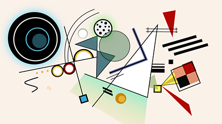

Interwoven Feedback

Click to Start
Audio on for a better experience
1
This experimental diorama project, including visual elements and sounds, are inspired by Vassily Kandisky abstract studies.
2
To start, move to the interactive menu on the left of this pop up and press the start button.